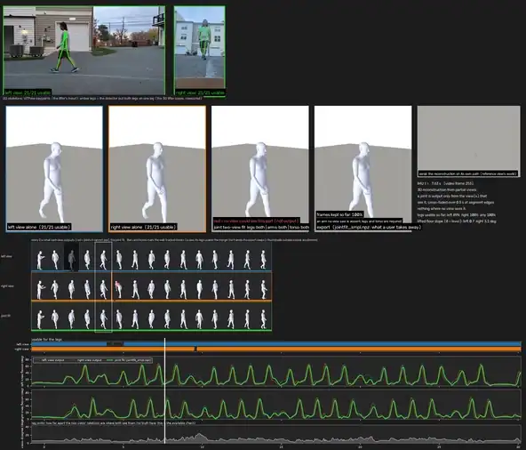
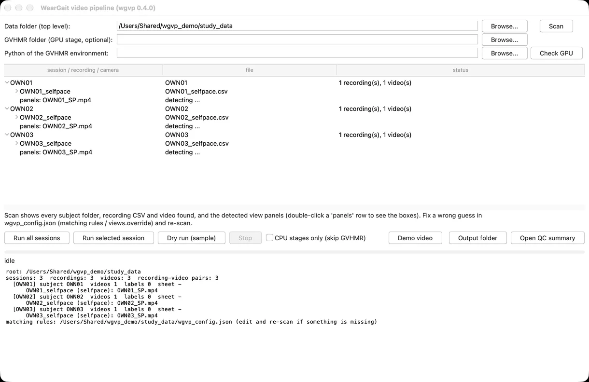

Two cameras, one sensor, the participant's 3D gait.
Gait-lab video usually shows more than the participant: staff at a desk, a clinician alongside, people passing. The participant is the one wearing the inertial sensors. wgvp uses that fact to turn a two-camera session video plus its sensor recording into per-frame 3D body poses of the participant alone.
It runs on the data owner's own computer, needs no network, and ships only pose-level derivatives. No video frame leaves the site.

Six stages, each checked
Everything runs on the CPU; the lift, GVHMR, is the slow stage and wants a GPU. Each stage writes a record of what it decided and why, and the session ends with a verdict: PASS, WARN or FAIL, with the reason.
- 1Scan
Match each subject folder's video and sensor CSV, and find the camera panels tiled into the frame.
- 2Track everyone
A 2D pose tracker follows every person in every view. No one is chosen at this stage.
- 3Find the walker
Each person's pelvis bob is correlated with the sensor's vertical motion. The participant is the person whose motion matches.
Try it - 4Set the clock
The same correlation places sensor time zero on the video, to within two frames. A light flash, where the recording has one, is the cross-check.
- 5Lift each view
GVHMR turns the participant's crops into SMPL-X bodies, one view at a time, on a GPU or slowly on a CPU.
- 6Merge and check
One body per frame from both views, each joint from the view that could vouch for it, with QC on every number.
Try it
What it does for a two-camera lab recording
- It finds the participant. Everyone in the frame is tracked, and the one whose pelvis motion matches the worn sensor is chosen; staff, a clinician alongside, a bystander and a second walker are left out. A clear margin over the next-best track is required, and the choice is recorded with its numbers.
- It syncs video and sensor without a clap. The same correlation places sensor time zero on the video to within two frames. A light flash or a labelled sheet, where the recording has one, is compared against it rather than relied on.
- The two cameras need no shared clock and no calibration. Each view is placed on the sensor's timeline on its own, and the joint fit calibrates the cameras from the lifted bodies. Recordings made with whatever cameras the lab had can be used as they are, panels tiled into one frame included.
- One body from both views, joint by joint. A joint is taken from the view that saw it, and from both where both did. What no view could vouch for is left out: a joint neither view saw is masked, and frames outside runs of at least fifteen usable frames are not exported. The export mask says which frames count.
- Partial bodies are expected. A near camera cuts the head off and a side camera loses the walker beyond the mat; the lifter is driven with the participant's own boxes, exits end a chunk and re-entries start one, and bridged frames are flagged rather than hidden.
- Every stage leaves its reasons. Selection, sync, the two views' agreement, the merge and the fit each write a record, and the session ends PASS, WARN or FAIL with the reason, so a result can be trusted or rejected without re-running anything.
- No video leaves the site. It runs on the data owner's computer with no network, and the deliverables are pose-level: body parameters, skeleton keypoints without face points, boxes, offsets and QC numbers. A privacy check confirms no pixels are among them.
- It is tested. Rendered two-view sessions with a known answer, a decoy walker, an operator and a bystander give an error budget per stage; the tests run on Windows, macOS and Linux at every change, the lift on a CPU on request.
Find the walker
The rendered test session that ships with the pipeline has a walker on the mat, a second person walking with a sensor file of their own, an operator at a desk and a bystander, all tracked in the side camera. The sensor's vertical displacement is the grey trace. Slide the lag to shift it along the video, and the correlation with each tracked person updates. The participant is the track that locks in, and the lag where it locks is sensor time zero on the video.
| Track | In view | r at this lag |
|---|
Two views, one body
A real two-camera recording of one of us, walking back and forth between two chalk marks a measured distance apart, in the layout the lab uses: a side camera on the left panel, a camera ahead on the right. The tracker's keypoints are drawn over the video. The body on the right is the recording's training target, one body fitted to both views' keypoints at once, which you can turn; each bone is coloured by how much each view vouched for that joint in that frame.
Pose-level files and a verdict
Only derivatives leave the site. Every lifted frame says what it was made from.
- target.json
- Which file is the training target for the recording and why: the joint two-view fit where it applies and passes its checks, the merge everywhere else.
- merged_smpl.npz
- One SMPL-X pose per frame on the sensor timeline, each joint from the view(s) that could vouch for it, with per-joint weights, the heading-relative root, the walker's path and the export mask.
- jointfit_smpl.npz
- One body fitted to both views' keypoints at once, with the cameras calibrated from the lifts themselves.
- smpl_global.npz, kp2d_vitpose.npz
- Per view: the lifter's output, its 2D input without face points, boxes, visibility, and the frames bridged across short gaps.
- selection.json, sync.json, reconcile.json
- Who was chosen and with what margin; where sensor time zero sits on the video and how the cross-checks agreed; how the two views agree on the timeline and on the joints.
- QC_SUMMARY.html
- Every session's verdict with its reasons, skeleton-only thumbnails, and a privacy check that no pixels are in the deliverables.
Results on rendered truth and one real recording
Six two-view sessions were rendered from real walks with a known pose in every frame, a known sensor offset, a decoy walker, an operator and a bystander. The real recording is the chalk walk above, where the truth is the distance between the marks. Real clinic video against a real sensor has not been run yet; that is the next test.
| Stage | Result | Measured on |
|---|---|---|
| Sensor time zero on the video | within 2 frames | the rendered sessions, against their known offset |
| The chosen track holds the participant | 100 % of frames | the rendered sessions, with a decoy walker, an operator and a bystander in view |
| The two views on the timeline | within 1 frame | each view's own placement of time zero, rendered and real |
| Merged leg joints against the truth | 9.7 deg median | the rendered sessions; the joint fit 9.4 deg |
| Merged root against the truth | 10.6 deg median | after one constant heading per recording; no yaw left in the heading-relative root |
| The two views' own lifts, leg joints apart | 8.2 deg median | rendered; 7.7 deg on the real recording |
| Walked distance against the chalk marks | +7 % merge, +13 % fit | the real recording, 4.11 m measured, four passes |
| Body height against the subject | +5 to +8 % | the real recording, 1.65 m measured; the lifter's scale on a real person is not yet pinned down |
| Lift on a CPU against the same lift on a GPU | 0.08 deg at the 99th pct. | one recording, every joint angle; about 35 s per second of video per view on four cores |
Scale of the walk, estimated over true
Mean walking speed on the six rendered sessions, where the truth is exact, and the distance walked between the chalk marks on the real recording. 1.00 is the truth; the real recording's bars carry their values.
Leg joints against the truth
Median three-axis error of the leg joints on the rendered sessions, where the truth is a pose per frame. The real recording has no joint truth; its two views' own lifts agree to … deg median.
The full record, with every figure, is in docs/results.md; the design decisions in docs/design.md.
Python 3.10 to 3.12 on Windows, macOS or Linux
The CPU stages, the window and the demo video run anywhere. The lift needs GVHMR, on a GPU or slowly on a CPU; the repository's tests exercise all of it on all three systems.
git clone https://github.com/mikecredence/wgvp.git
cd wgvp
python -m venv wgvp-env
source wgvp-env/bin/activate # Windows: wgvp-env\Scripts\activate
pip install -r requirements.txt
python -m wgvp dry-run --cpu-only # the rendered sample, verified
python -m wgvp # the windowThe window scans a data folder, runs all sessions or one, stops, checks the GPU environment, renders the demo video and opens the QC summary. The README's quick start has the folder layout and the GVHMR install.

